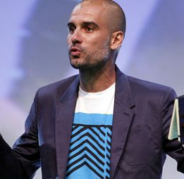

EFE 1 de mayo de 2013 11:24h
Josep Guardiola ofreció anoche una conferencia en Bogotá (Colombia) en la que habló sobre las semifinales de la Champions que ayer disputaron Real Madrid y Borussia de Dortmund y de la que esta noche enfrentará a Barcelona y Bayern. El ex del Barça y próximo técnico de los bávaros no se moja en un marcador ya que cree que “puede pasar cualquier cosa”.
Barcelona-Bayern. Juegan dos equipos fantásticos, todo puede pasar. Son equipos que han tenido un dominio extraordinario en sus ligas, lo que han conseguido esta temporada es muy merecido. Estoy muy impaciente. ¿Un pronóstico? Soy muy malo pronosticando... ( risas)”.

Real Madrid-Borussia. “Ha sido un partido muy emocionante. El resultado fue amplio en el partido de ida y con el Real Madrid; nunca en el Bernabéu uno puede decir que algo se acaba hasta que el árbitro pita el final. Lo digo por experiencia”.
Supremacía alemana. “Creo que el fútbol alemán ha sido muy interesante este año. Pero el fútbol español, gracias a dos personas importantísimas como Luis Aragonés y Vicente del Bosque, ha llegado a niveles altísimos.La Liga Premier de Inglaterra siempre está entre las tres primeras, Italia ha bajado un poco, en estos países la economía ha afectado, pero a veces es normal que las tendencias vayan pasando y hay que esperar el paso del tiempo”